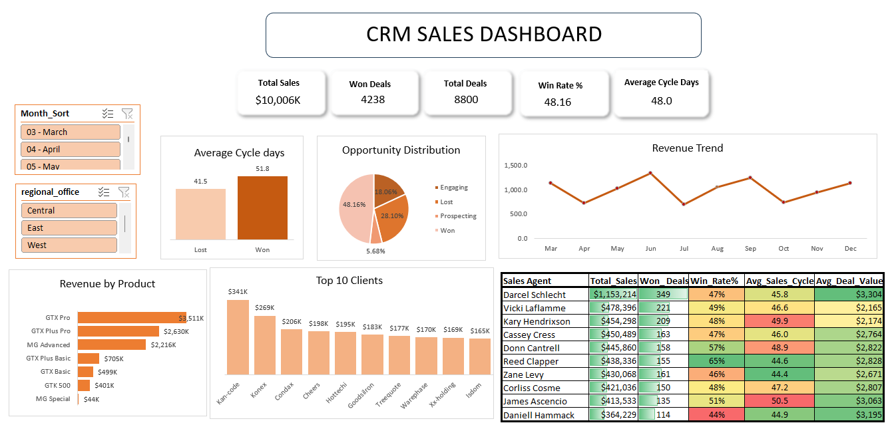

Ijaz
Aspiring Power BI Developer | Data Analyst | BI Developer
PL-300 certified data analytics professional focused on transforming
business data into interactive Power BI dashboards,
actionable insights and clear data stories.
My primary focus is Power BI, supported by
SQL for data extraction, transformation and analysis,
and Excel for exploratory analysis and reporting.
I enjoy moving beyond simply reporting numbers — understanding
what happened, why it happened, where the business impact
is concentrated, and what areas may require further investigation.
✓ Microsoft Certified: Power BI Data Analyst Associate (PL-300)
I am an aspiring Power BI Developer and Data Analyst
building hands-on business intelligence projects using real-world
datasets.
My work focuses on the complete analytical process:
understanding business questions, preparing data, building
analytical models, developing DAX measures, creating interactive
dashboards and communicating insights through data storytelling.
I am particularly interested in how BI dashboards can help
stakeholders move from a high-level KPI to the underlying drivers
of business performance.
I believe a Power BI dashboard should do more than display charts.
It should guide the user through a logical business story.
1. What happened?
Start with the most important KPIs and trends to establish the
current state of the business.
2. When did it happen?
Use time-based analysis and comparable periods to identify when
performance changed.
3. Where is the impact?
Drill into categories, products, customers, countries and cities
to identify where changes are concentrated.
4. What is driving the change?
Move from high-level KPIs into detailed analysis to investigate
the products, markets and customer behaviors associated with
the change.
5. What should be investigated next?
Translate findings into business implications and identify areas
where stakeholders may want to investigate further.
Power BI • SQL Server • Business Intelligence
🌍 Global Electronics Sales Analytics Dashboard
An end-to-end Business Intelligence and Data Analytics
project analyzing sales performance for a global electronics
retailer across products, categories, customers and geographic markets.
The project combines SQL Server data warehousing,
data quality validation, Power BI data modeling, DAX time intelligence
and interactive dashboard design to investigate a significant
decline in sales performance.
🎯 Business Problem
Global Electronics experienced a substantial decline in sales
compared with previous years. Management needs to understand
when the decline occurred, which categories and products
were affected, which markets contributed to the decline, how
customer behavior changed, and whether profitability was also
affected.
The dashboard was designed to provide a centralized analytical
view for investigating these questions.
49%
2020 Sales Decline
62%
Latest 12-Month Decline
75%
Jan–Feb 2021 Decline
$4.26M
Computer Revenue Decline
📖 The Business Story
The analysis begins with the overall sales trend, where the
business shows a significant deterioration in performance.
From there, the dashboard moves into category-level analysis to
determine where the largest revenue impact is concentrated.
The analysis then drills down to individual products to understand
which high-revenue products contributed to those category declines.
Geographic analysis then moves from Region → Country →
City, revealing that although major markets experienced
significant declines, performance was not uniform across individual
cities.
Finally, customer and profitability analysis provides additional
context around the overall change in business performance.
🔎 Key Business Insights
Overall Sales Decline
2020 sales were approximately 49% lower than 2019.
The latest 12-month period, March 2020–February 2021,
generated approximately $6.9M compared with $18.5M in the
previous comparable period.
Computers Had the Largest Absolute Impact
Computers represent roughly one-third of revenue and
experienced an approximately $4.26M year-over-year decline,
making the category particularly important when investigating
the overall sales reduction.
Decline Was Broad Across Categories
Home Appliances declined by approximately $1.87M,
Cameras & Camcorders by approximately $1.50M, and
Cell Phones by approximately $1.44M.
Product-Level Declines Were Significant
Multiple high-revenue products experienced substantial
reductions, showing that the overall decline was not caused
by a single product.
Geographic Decline Was Broad-Based
All five major markets analyzed experienced substantial
year-over-year declines, ranging from approximately 59.8%
to 68.4%.
City-Level Performance Varied
Despite broad country-level declines, some cities remained
relatively stable or emerged as new contributors, showing
why country-level KPIs alone can hide important local trends.
🌍 Geographic Analysis
Geographic performance was analyzed using a
Region → Country → City drill-down approach.
| Market |
LY Sales |
CY Sales |
YoY Change |
| United States |
$10.2M |
$4.1M |
-59.8% |
| United Kingdom |
$2.1M |
$0.7M |
-66.7% |
| Germany |
$1.9M |
$0.6M |
-68.4% |
| Canada |
$1.5M |
$0.6M |
-60.0% |
| Australia |
$0.9M |
$0.3M |
-66.7% |
The city-level analysis adds important context. For example,
within the United States, Portland declined approximately 87.2%
while Dallas remained relatively stable with an approximately
4.8% decline. Other cities, including Baton Rouge and Saginaw,
recorded growth from their previous-year bases.
These differences demonstrate the importance of drilling beyond
country-level KPIs when investigating business performance.
👥 Customer Analysis
Customer analytics was used to investigate customer segments,
purchasing behavior, average order value, orders per customer,
repeat customer activity and customer contribution to sales.
This analysis helps investigate whether changes in revenue may be
associated with customer volume, purchasing frequency, order value,
or a combination of these factors.
💰 Profitability Analysis
Sales performance was analyzed alongside cost and profit metrics
to distinguish between revenue decline and profitability
decline.
This provides additional context when evaluating the areas that
may require further business investigation.
💡 Business Implications
The analysis highlights several areas for management to
investigate further:
-
High-revenue categories with large absolute declines.
-
High-performing products experiencing substantial reductions.
-
Major geographic markets with significant contraction.
-
Cities showing resilience or emerging as new contributors.
-
Changes in customer purchasing behavior.
-
The relationship between declining sales and profitability.
These findings provide starting points for deeper investigation
rather than assuming a single cause for the overall decline.
📊 Power BI Dashboard
The dashboard is structured to move from executive-level KPIs
toward detailed product, customer and geographic analysis.

⚙️ Technical Implementation
-
SQL Server:
Data warehouse development and analytical data preparation.
-
Medallion Architecture:
Bronze, Silver and Gold data layers.
-
Data Quality:
Duplicate checks, null validation, data types,
referential integrity and business-rule validation.
-
Data Modeling:
Star-schema Power BI model using fact and dimension tables.
-
DAX:
Sales, profit, margin, YoY analysis, time intelligence,
average order value and customer metrics.
-
Power BI:
Interactive dashboards, drill-down analysis, filters,
KPIs and business-focused visual storytelling.
🏗️ Data Architecture
Source CSV Files
↓
Bronze Layer — Raw Data
↓
Silver Layer — Cleaned & Validated Data
↓
Gold Layer — Business-Ready Data
↓
Power BI Data Model
↓
DAX Measures
↓
Interactive Dashboard
↓
Business Insights
🧩 Power BI Data Model
Dim_Customers
│
│
Dim_Date ─────── Fact_Sales ─────── Dim_Products
│
│
Dim_Stores
│
│
Dim_ExchangeRates
The star schema separates transactional business events from
descriptive dimensions and provides a structured foundation for
analytical reporting.
🐞 Problem Solving & Power BI Debugging
During development, one KPI produced unexpected results because
a hidden Year filter/slicer was affecting the
report page.
Instead of immediately rewriting the DAX, the issue was
investigated through the report's filter context and visual
configuration.
Key Learning:
When a Power BI result looks incorrect, validate the
filter context, model relationships and visual
configuration before assuming the DAX calculation
is incorrect.
View Full Project on GitHub →
Excel Analytics Project
CRM Sales Pipeline Dashboard
Developed an interactive CRM Sales Dashboard using Microsoft Excel
to analyze sales pipeline performance, revenue trends, product
performance, sales agent effectiveness, opportunity stages and
sales cycle information.
Business Questions
-
How is the sales pipeline performing?
-
Which products are generating the most revenue?
-
How are sales agents performing?
-
How are opportunities distributed across pipeline stages?
-
What patterns can be identified in the sales cycle?
Technical Implementation
- Power Query
- Power Pivot
- DAX
- PivotTables
- PivotCharts
- Interactive slicers
- Star-schema data model

View Excel Project on GitHub →
Business Understanding
Start by understanding the business context and identifying
the questions that the analysis needs to answer.
Data Preparation
Clean, transform and validate the data before using it for
analysis.
Data Modeling
Build structured analytical models that support reliable
calculations and efficient reporting.
Analysis
Analyze trends, categories, products, customers and markets
to identify meaningful patterns.
Data Storytelling
Organize visuals so users can move naturally from
What happened? to
Why? and
Where should we investigate further?
Business Implications
Translate analytical findings into clear implications while
distinguishing observed evidence from assumptions or
recommendations.
I am currently seeking an entry-level opportunity as a
Power BI Developer, Business Intelligence Developer,
or Data Analyst.
I am particularly interested in roles where I can combine
Power BI, SQL and Excel to transform business data
into reliable analysis, interactive dashboards and decision-support
insights.
I am eager to continue developing my technical and analytical
capabilities while contributing to real-world Business Intelligence
projects.